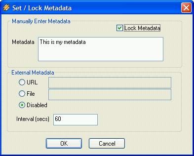
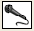
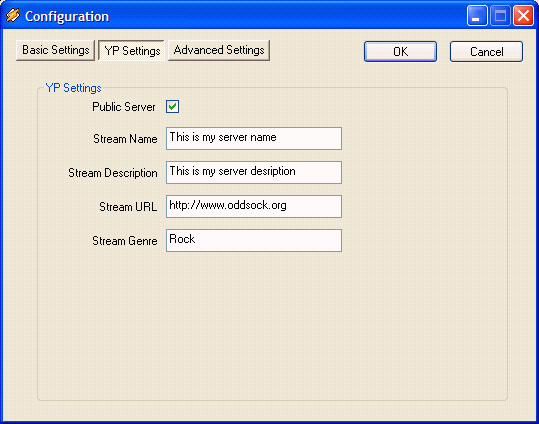

Editing Metadata
When the Edit button is clicked, the following window appears :

This window has 2 sections, one for entering the metadata manually, and that
can be used for more automated tasks. To enter the metadata manually, simply
enter the metadata in the supplied box and click "OK". This will cause the
current metadata to be what you just entered. Additionally, you may "Lock" the
metadata, which will prevent any other updates (via the media player or via the
external Metadata) to override what you entered. This is, in general, used to set
the metadata in a more permanent fashion.
In addition to entering the metadata manually, you can configure oddcast to get
metadata from external sources. Currently, only file and URL are supported. A
interval is specified and every interval, oddcast will either access the File or URL
and use that data as it's metadata. If using a File, then oddcast will read the first
line of the file and use that as the metadata, and if using a URL, it will similarly
read the first line in the response from the URL call.
Live Recording
The live recording section of the main oddcast window is used to enable and
disable live recording within oddcast. To enable live recording, simply click on
the microphone icon . Additionally, you can configure which device will be
used as the recording device by selecting it from the dropdown in the live
recording section of the oddcast config. Right below this dropdown is a slider
control which controls the recording level for that recording device. Each
recording device has a separate volume control.
Encoder Settings
This section is the meat of the configuration of oddcast. This is where you add
encoders for each of your desired streams. Each encoder can be configured
independently and each of them have their own set of configuration parameters.
For the sake of this documentation, we will walk through configuring a single
encoder, and adding additional encoders should be iterations of the first.
You will see 2 buttons and a check box in this section of the oddcast main
window. The "Connect" button is used to connect all defined encoders.
Additionally individual encoders can be specificially connected by right clicking
on them. The AutoConnect checkbox can be used to automatically connect all
the defined encoders on oddcast startup. When this checkbox is checked,
oddcast will automatically initiate a "Connect" action on each of the encoders 5
seconds after oddcast startup.
Also, new encoders can be added by clicking the "Add encoder" button.
To configure a new or existing encoder, simply double click on it and the
configuration screen will appear. There are 3 sections to the configuration
screen.
Basic Settings

The following describes each of the settings :
Bitrate
This value is used only for MP3 streams. For Ogg Vorbis and AAC streams,
Quality is used.
Quality
This value is used for Ogg Vorbis streams and AAC Streams. Valid values for
Ogg Vorbis are -1 through 10, and for AAC 10 through 500.
Samplerate
In the case of MP3, this must be a valid MP3 samplerate (11025, 22050, 44100),
but in the case of Ogg Vorbis it is arbitrary. I'm not sure about AAC.
Channels
1 for Mono, 2 for Stereo
Encoder Type
Only supported encoder types will appear in this listbox. This means, if you
didn't download lame_enc.dll or libfaac.dll, then you won't be able to select it
from this dropdown.
Server Type
Valid values are Shoutcast and Icecast2. Selecting the wrong one will result in
connection errors.
Server IP
The server IP or hostname for the broadcasting server (i.e. Shoutcast/Icecast2)
Server Port
The port that your broadcasting server is running on.
Encoder Password
You must make sure that the encoder paswords match between oddcast and the
broadcasting server.
Mountpoint
Mountpoints are appropriate ONLY for icecast2 server types. They are a unique
identifier for your stream (icecast2 can handle multiple simultaneous streams).
Most listening clients rely on the extention of the mountpoint to choose the
correct decoder for your stream. This means, that Ogg Vorbis streams must end
in .ogg (i.e. /stream.ogg), AAC streams must end in .aac (/stream.acc), and (by
convention) MP3 may or may not need an extension (/stream). Note that all
mountpoints MUST start with a '/'.
Reconnect Seconds
This is the number of seconds to pause in between reconnection attempts.
(Reconnection is currently automatic).
YP Settings

The following describes each of the settings :
Public Server
If Checked, this stream will be marked as "public" and if your broadcast server is
configured with a yellow pages (stream directory), it will be listed there.
Stream Name
The name of your stream.
Stream Description
A short description of your stream.
Stream URL
The website associated with your stream.
Stream Genre
Your stream genre (can be multiples)
Advanced Settings
The following describes each of the settings :
Save Archive Of Stream
If this value is checked, then oddcast will save an archive of your stream in the
directory specified. The file will be named based off a timestamp and the stream
name.
Save As WAV
If this option is checked, then a high-quality archive will be kept. Warning, you
better have LOTS of disk space if you enable this.
Archive Directory
The directory in which archive broadcasts will be saved.
Log Level
This is for debugging oddcast, 1 = debug, 4 = error. * for advanced uses only
Log File
If no log file is specified, then no log file will be produced.